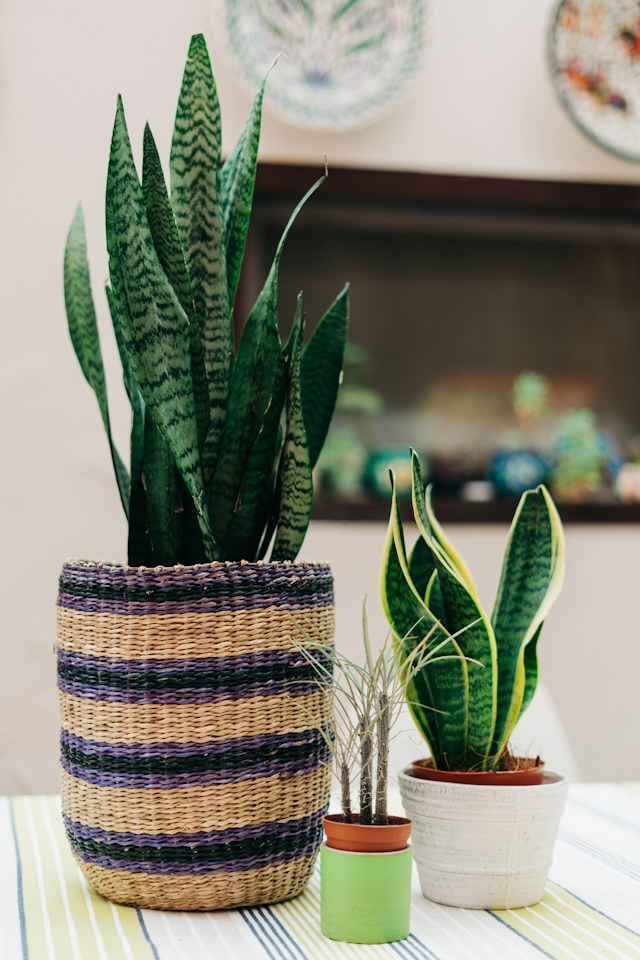
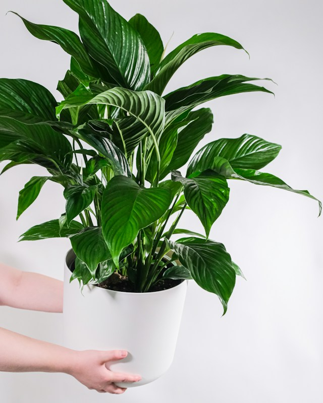
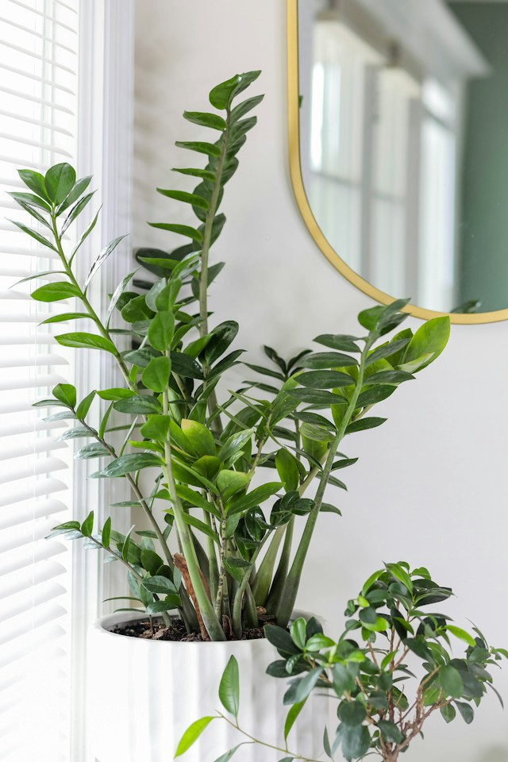

At BloomBotanicals, we believe in bringing nature closer to you. Step into a sanctuary of lush, vibrant greenery and transform your living spaces with the beauty of indoor plants. Whether you're a seasoned plant enthusiast or just beginning your green journey, we have something special for you.
Explore Our Collections
Browse through our curated collections of air-purifying wonders, elegant succulents, and eye-catching potted arrangements. Each plant is handpicked to bring a touch of nature into your home or office, creating an oasis of tranquility.
We care for the Earth just as much as we care for your plants. Discover our commitment to sustainability – from responsible sourcing to eco-friendly packaging. Join us in nurturing a greener planet, one plant at a time.
Plant Care Made Easy
Not sure how to care for your new green companions? Our Plant Care section provides expert tips and guides, ensuring your plants thrive. From watering schedules to sunlight requirements, we've got you covered.
Create Your Oasis
Bring your vision to life with our Custom Arrangements. Choose your favorite plants and containers to craft a personalized botanical masterpiece. Perfect for special occasions or adding a touch of nature to your space.
Start Your Green Journey Today
Embrace the beauty of nature within your home. Explore our collections, learn about sustainability, and embark on a journey of growth and greenery. Welcome to BloomBotanicals – where every plant tells a story.
Check out our most popular plants
Snake Plant

Scientific Name: Sansevieria Trifasciata
Details: Known for its upright, sword-like leaves with variegated patterns. Excellent air purifier and low-maintenance.
Care Instructions: Thrives in indirect light, water sparingly, and well-draining soil.
History: Native to West Africa, traditionally believed to bring good luck.
Origin: West Africa
Peace Lily

Scientific Name: Spathiphyllum Wallisii
Details: Elegant, dark green leaves with white blooms. Effective air purifier.
Care Instructions: Prefers indirect light, keep soil consistently moist, and humid conditions.
History: Native to tropical regions of America.
Origin: Tropical America
ZZ Plant

Scientific Name: Zamioculcas Zamiifolia
Details: Glossy, dark green leaves with a unique leaflet structure. Tolerant to low light.
Care Instructions: Low water requirements, adapts to low light conditions.